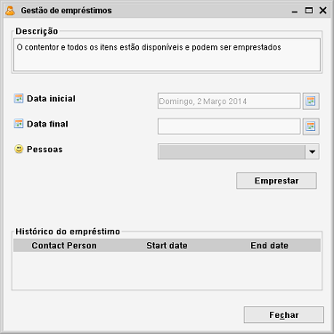

Emprestar itens
Clique num item com o botão direito > Selecione Gestão de empréstimos
Os empréstimos podem ser geridos numa janela que abre ao escolher "Gestão de empréstimos",
no menu que abre quando clica com o botão direito no item, ou no separador Empréstimo no
Formulário de item. É mantido um histórico
de empréstimos.

Pode obter um resumo dos seus empréstimos usando a funcionalidade
Gestão de empréstimos
no menu Gestão. O formulário Pessoa também contém um separador
que mostra os itens que lhe estão emprestados.
Se um item foi emprestado e já ultrapassou o prazo de devolução (a pessoa não devolveu
o item até à data combinada), é mostrada uma mensagem de aviso no arranque.
Pessoas
Para que a gestão de empréstimos funcione, tem de registar pessoas no módulo Pessoas.
O registo de pessoa funciona da mesma forma que o registo de um item em qualquer outro módulo.
Emprestar um item
Especifique a pessoa a quem vai emprestar o item e a data em que o empréstimo se inicia.
Se a dat inicial é hoje (ou no passado) o item será marcado como indisponível.
Pode introduzir uma data ultrapassada para indicar quando é que a pessoa deve devolver o item. Se a pessoa
devolver o item depois desta data considera-se a devolução com o prazo ultrapassado.
O item não pode ser emprestado a mais ninguém até que seja devolvido. Note que há três campos
disponíveis que lhe dizem mais acerca do estado do empréstimo, "Disponível", "Emprestado a" e
"Dias do empréstimo". Estes podem se adicionados nas
Definições gerais de campos.
Devolução de um item
Os items emprestados devolvidos por uma pessoa podem ser registados como "Devolvido".
Prima "Receber item". Por predefinição a data de devolução é a atual. Pode introduzir
uma data diferente no campo "Data final" antes de clicar em "Receber item".
Filtrar
Como foi dito atrás, há três campos disponíveis que nos dizem mais acerca do estado do empréstimo
de um item específico, "Disponível", "Emprestado a" e "Dias do empréstimo". Estes campos podem ser usados para
criar um Filtro.
Note que a Gestão de empréstimos permite-lhe ver todos os
empréstimos, tanto históricos como atuais.
Histórico de empréstimos
Este resumo mostra empréstimos anteriores.